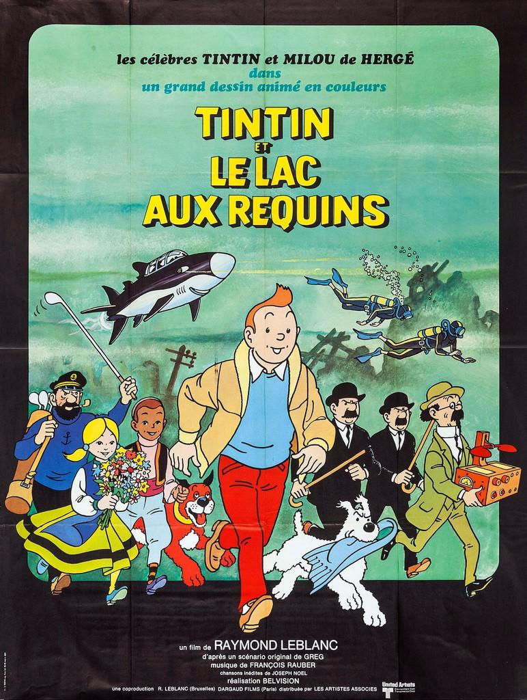
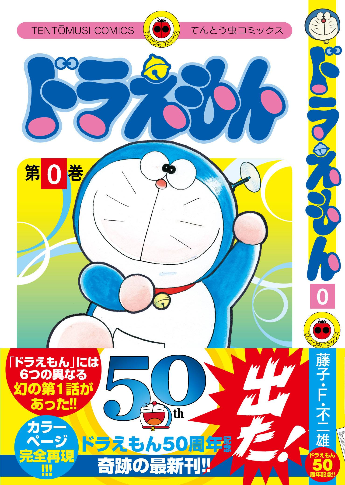

Si Juki

Si Juki is a fictional comedy and adventure story, the story is about an asteroid that wanted to hit the earth. Then everyone on earth is starting to panic. Si Juki and team is trying to save the earth by stopping the asteroid, at first they said it was impossible until Si Juki and friends try to make a spaceship and fly to the asteroid, when they finally made the spaceship and made it to the asteroid they didn’t find a way to break the asteroid because they have the wrong planned. Si Juki then find out the way how to break and stop the asteroid within the bomb.
Tintin
Tintin is a fictional detective story, Tintin is the main character who tries to help his friend because his friend got kidnapped by the enemies. Because Tintin is a good and professional detective Tintin find the way to spy and hear what the enemies said. Then Tintin work together with his other friends to help him. His friend was a cop then because of that, Tintin could find out the way to find his friend with the clue that he got because his policer friend knows another policer that has an information of Tintin friends. Then Tintin finally found his friend and live happily together again.
Doraemon
Doraemon is a fictional stories, the stories is about a cat robot called Doraemon that could help human. When Doraemon was made in the factory, Doraemon was structed by the lightning in the sky that made him having a lot of pain, after he got structed by the lightning Doraemon machine is broken that made him gotten throw away. Doraemon is still alive but he was really sad, then one day a kid brought Doraemon to a robot specialist to fix him, when he got fixed Doraemon ear got bitten by the rat and make his ear needs to be amputate, because of that Doraemon was really scared of a rat. Doraemon cries badly that makes his body turns to blue and that’s how Doraemon was formed.